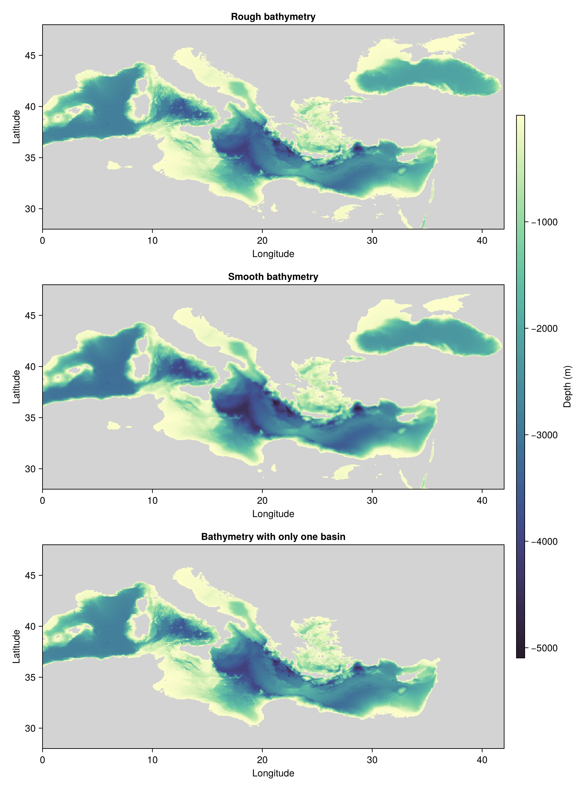

Generate bathymetry data for the Mediterranean Sea
This example shows how to configure an Immersed boundary grid with realistic bathymetry using ClimaOcean.jl by generating the bathymetry data for the Mediterranean Sea.
For this example, we need Oceananigans for the LatitudeLongitudeGrid and Field utilities, ClimaOcean to donwload and regrid the bathymetry, and CairoMakie to visualize the grid.
using ClimaOcean
using Oceananigans
using CairoMakieWe start by defining a gridded domain for the Mediterranean Sea using the LatitudeLongitudeGrid from Oceananigans.
The Mediterranean sea is positioned roughly between 28ᵒ and 48ᵒ latitude and 0ᵒ and 42ᵒ longitude. We define a grid in this region and to have a reasonable resolution, we set a grid resolution to 1/25ᵒ in both latitude and longitude directions.
latitude_range = (28, 48)
longitude_range = (0, 42)
Nφ = 25 * (latitude_range[2] - latitude_range[1])
Nλ = 25 * (longitude_range[2] - longitude_range[1])
grid = LatitudeLongitudeGrid(size = (Nλ, Nφ, 1),
latitude = latitude_range,
longitude = longitude_range,
z = (0, 1),
halo = (7, 7, 1))1050×500×1 LatitudeLongitudeGrid{Float64, Oceananigans.Grids.Bounded, Oceananigans.Grids.Bounded, Oceananigans.Grids.Bounded} on Oceananigans.Architectures.CPU with 7×7×1 halo and with precomputed metrics
├── longitude: Bounded λ ∈ [0.0, 42.0] regularly spaced with Δλ=0.04
├── latitude: Bounded φ ∈ [28.0, 48.0] regularly spaced with Δφ=0.04
└── z: Bounded z ∈ [0.0, 1.0] regularly spaced with Δz=1.0Next, we generate the bathymetry data for the Mediterranean Sea using the regrid_bathymetry function from ClimaOcean. The function downloads the bathymetry data from the ETOPO1 dataset, regrids it to the provided grid, and returns the bathymetry field. The three different regidding procedures below demonstrate the effect of different parameters on the generated bathymetry:
h_roughshows the output of the function with default parameters, which means only one interpolation passes and no restrictions on connected regions.h_smoothshows the output of the function with 40 interpolation passes, which results in a smoother bathymetry.h_no_connected_regionsshows the output of the function withmajor_basins = 1, which means that the function does not allow connected regions in the bathymetry (e.g., lakes) and fills them with land.
h_rough = regrid_bathymetry(grid)
h_smooth = regrid_bathymetry(grid; interpolation_passes = 40)
h_one_basin = regrid_bathymetry(grid; major_basins = 1)Finally, we visualize the generated bathymetry data for the Mediterranean Sea using CairoMakie.
land_smooth = interior(h_smooth) .>= 0
interior(h_smooth)[land_smooth] .= NaN
land_rough = interior(h_rough) .>= 0
interior(h_rough)[land_rough] .= NaN
land_one_basin = interior(h_one_basin) .>= 0
interior(h_one_basin)[land_one_basin] .= NaN
fig = Figure(size=(850, 1150))
ax = Axis(fig[1, 1], title = "Rough bathymetry", xlabel = "Longitude", ylabel = "Latitude")
hm = heatmap!(ax, h_rough, nan_color=:lightgray, colormap = Reverse(:deep))
ax = Axis(fig[2, 1], title = "Smooth bathymetry", xlabel = "Longitude", ylabel = "Latitude")
hm = heatmap!(ax, h_smooth, nan_color=:lightgray, colormap = Reverse(:deep))
ax = Axis(fig[3, 1], title = "Bathymetry with only one basin", xlabel = "Longitude", ylabel = "Latitude")
hm = heatmap!(ax, h_one_basin, nan_color=:lightgray, colormap = Reverse(:deep))
cb = Colorbar(fig[1:3, 2], hm, height = Relative(3/4), label = "Depth (m)")
save("different_bottom_heights.png", fig)
This page was generated using Literate.jl.